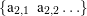

| Up | Next | Prev | PrevTail | Tail |
Author: Arthur Norman
This package provides a parser-generator, somewhat styled after yacc or the many programs available for use with other languages. You present it with a phrase structure grammar and it generates a set of tables that can then be used by the function yyparse to read in material in the syntax that you specified. Internally it uses a very well established technique known “LALR” which takes the grammar are derives the description of a stack automaton that can accept it. Details of the procedure can be found in standard books on compiler construction, such as the one by Aho, Ullman Lam and Sethi.
At the time of writing this explanation the code is not in its final form, so this will describe the current state and include a few notes on what might chaneg in the future.
Building a parser is done in Reduce symbolic mode, so say "symbolic;" or "lisp;" before starting your work.
To use the code here you use a function lalr_create_parser, giving it two arguments. The first indicates precedence information and will be described later: for now just pass the value nil. The second argument is a list of productions, and the first one of these is taken to be the top-level target for the whole grammar.
Each production is in the form
which in regular publication style for grammars might be interpreted as meaning
| LHS | ⇒ | rhs1,1 rhs1,2… | |||||
| | | rhs2,1 rhs2,2… |  | |||||
| … | |||||||
| ; |
The various lines specify different options for what the left hand side (non-terminal symbol) might correspond to, while the items within the braces are sematic actions that get obeyed or evaluated when the production ruls is used.
Each LHS is treated as a non-terminal symbol and is specified as a simple name. Note that by default the Reduce parser will be folding characters within names to lower case and so it will be best to choose names for non-terminals that are unambiguous even when case-folded, but I would like to establish a convention that in source code they are written in capitals.
The RHS items may be either non-terminals (identified because they are present in the left hand side of some production) or terminals. Terminal symbols can be specified in two different ways.
The lexer has built-in recipes that decode certain sequences of characters and return the special markers for !:symbol, !:number, !:string, !:list for commonly used cases. In these cases the variable yylval gets left set to associated data, so for instance in the case of !:symbol it gets set to the particular symbol concerned. The token type :list is used for Lisp or rlisp-like notation where the input contains ’expression or ‘expression so for instance the input ‘(a b c) leads to the lexer returning !:list and yylvel being set to (backquote (a b c)). This treatment is specialised for handling rlisp-like syntax.
Other terminals are indicated by writing a string. That may either consist of characters that would otherwise form a symbol (ie a letter followed by letters, digits and underscores) or a sequence of non-alphanumeric characters. In the latter case if a sequence of three or more punctuation marks make up a terminal then all the shorter prefixes of it will also be grouped to form single entities. So if "<–>" is a terminal then ’<’, ’<-’ and ’<–’ will each by parsed as single tokens, and any of them that are not used as terminals will be classified as !:symbol.
As well as terminals and non-terminals (which are writtent as symbols or strings) it is possible to write one of
| (OPT s1 s2 …) | 0 or 1 instances of the sequence s1, … |
| (STAR s1 s2 …) | 0, 1, 2, …instances. |
| (PLUS s1 s2 …) | 1, 2, 3, …instances. |
| (LIST sep s1 s2 …) | like (STAR s1 s2 …) but with the single item |
| sep between each instance. | |
| (LISTPLUS sep s1 …) | like (PLUS s2 …) but with sep interleaved. |
| (OR s1 s2 …) | one or other of the tokens shown. |
When the lexer processes input it will return a numeric code that identifies the type of the item seen, so in a production one might write (!:symbol ":=" EXPRESSION) and as it recognises the first two tokens the lexer will return a numeric code for !:symbol (and set yylval to the actual symbol as seen) and then a numeric code that it allocates for ":=". In the latter case it will also set yylval to the symbol !:!= in case that is useful. Precedence can be set using lalr_precedence. See examples below.
| Up | Next | Prev | PrevTail | Front |